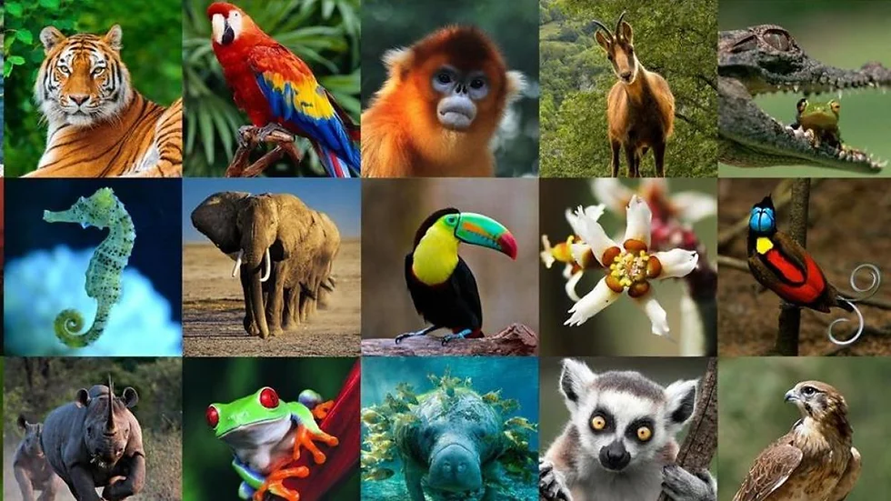
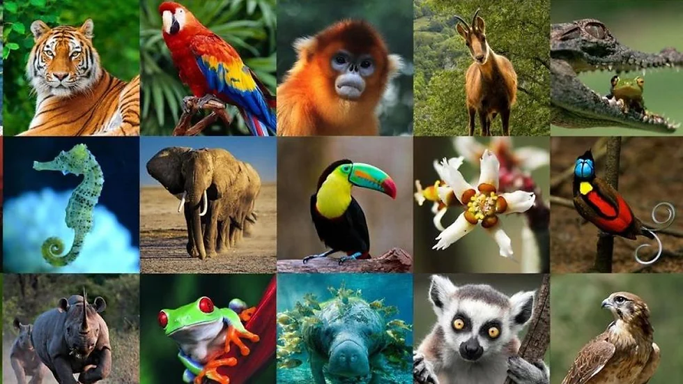

INTRODUCCÓN:
Los animales són animales y por eso se merecen que hable de ellos en algún lugar.
|  | Esa és razón de que esta págia exista, hablaré de algunos animales |
INTRODUCCÓN:
|  | Esa és razón de que esta págia exista, hablaré de algunos animales |